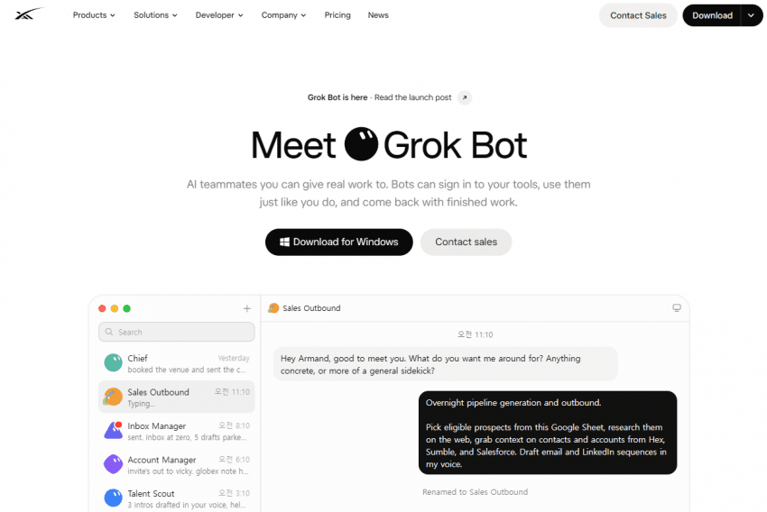

dot.com 도메인 사서 그록사이트로 돌려버림ㅋㅋ

dot.com 도메인 사서 그록사이트로 돌려버림ㅋㅋ

아 나도 이생각 했는데 ㅋㅋㅋㅋㅋㅋㅋㅋㅋㅋㅋㅋㅋㅋㅋ
gpt dot이 그록 봇을 베끼긴 함 ㅋㅋ
Gpt는 dots아닌가
그럼 gpt는 gpt.dot라는 도메인을 사서 쓰면 되겠네 ㅋㅋ
아쉽게도 .dot TLD는 없네
dotdotcom
닷닷컴
이거 용도가 머임?
에이전트 돌리려면 중간중간 코드작성해서 돌리기도 해야하고 앱같은거 설치도 해야하고 하는 과정이 필요해서 보통 개발자들은 맥 사서 세팅해서 원격으로도 시키고 하면서 에이전트들 굴리는데
그걸 자체가상머신에서 해주는거. 그냥 온갖거 다 해주는 에이전트라고 보면 됨. 시켜놓고 기다리면 알아서 결과 가져오고. 주기적으로 어떤 작업하게 시키는 것도 가능하고
일반인이 에이전트 쉽게 쓰도록 하는 거임
그냥 채팅말고 일을 시켜버릴 수 있는 놈
마누스 고급버전이네
신입사원 고급버전
vm
신기하긴 한데 이미 그록봇이랑 뮤즈로 봤던 거고
쓸 사람은 반년도 더 전에 헤르메스 구축해서 썼을 거라 큰 의미가 없는 듯
오픈ai는 본업에 더 집중하면 좋을 거 같은데 자꾸 부차적인 서비스에 손을 뻗음
신기하네
머스크형 이러기야?